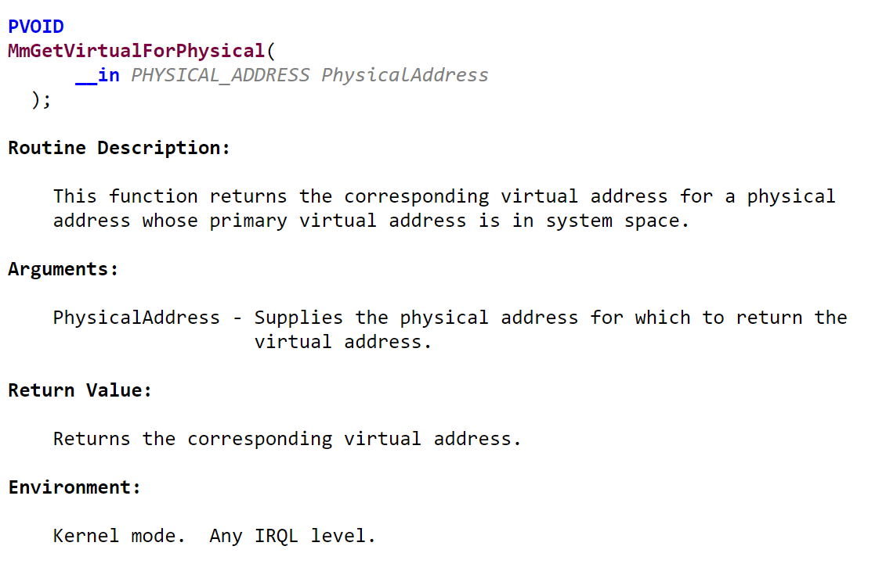
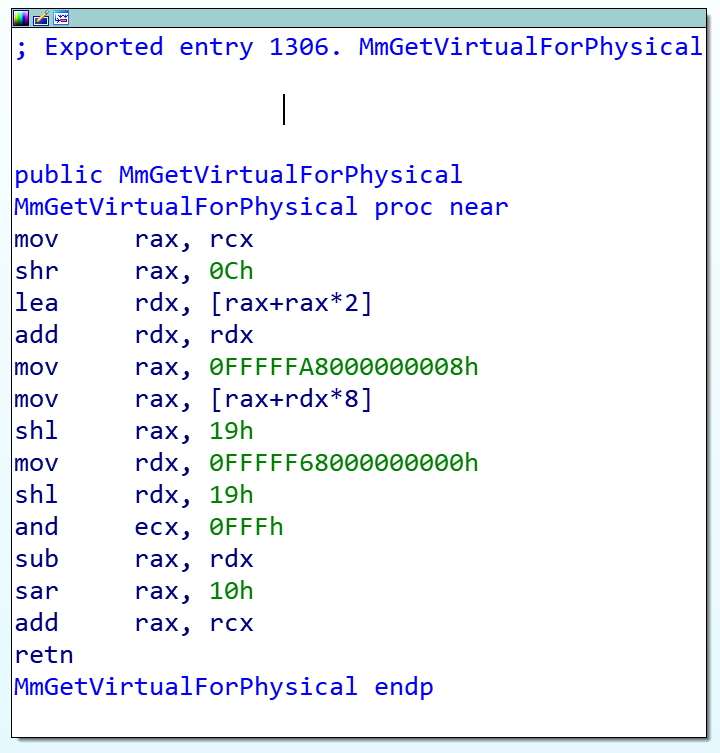
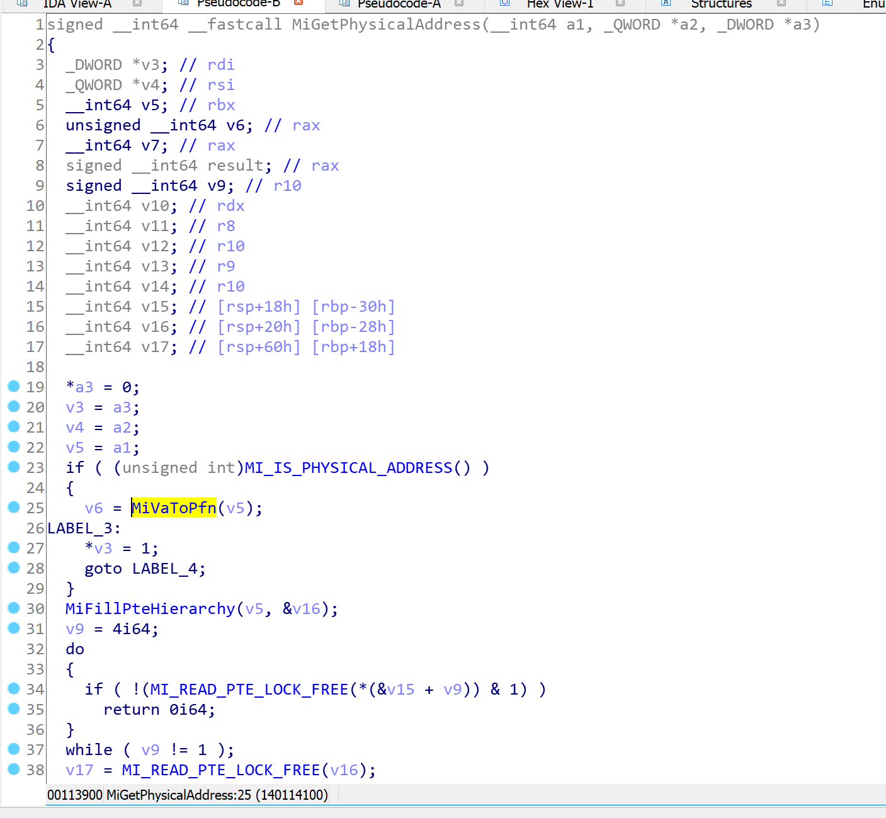
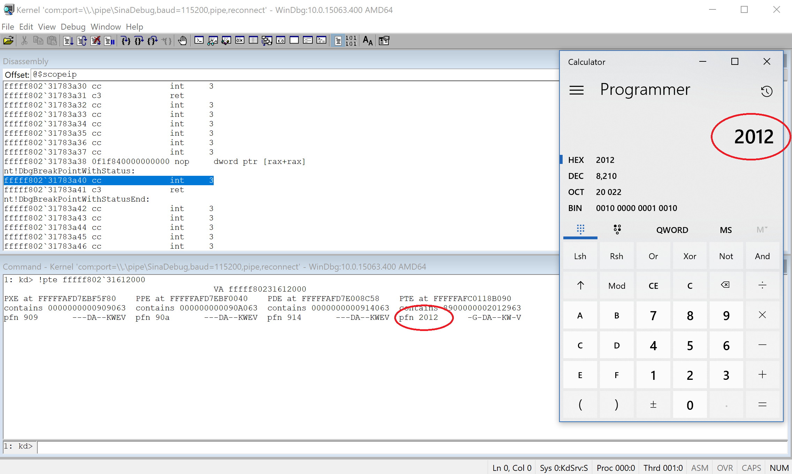
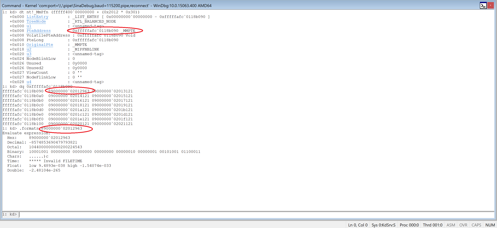
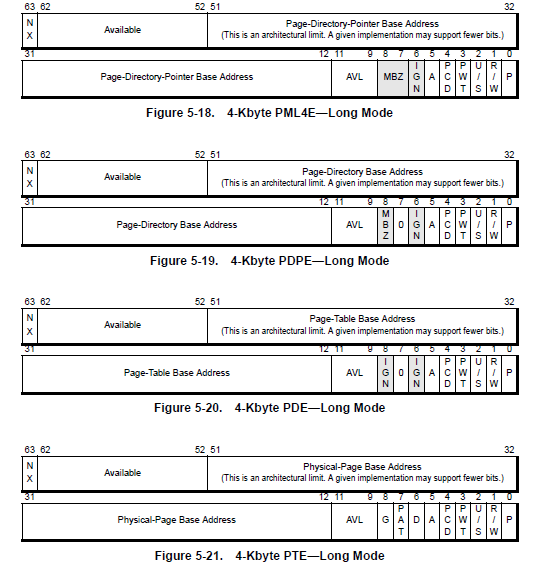

Hey there,
In the previous part, I’d explained about Page Frame Number and its importance in the OSs architecture. In this part, I’ll trace PFN more practically. I strongly recommend to read the first part, to make sure you didn’t miss anything about basic concepts.
As I described in the previous part, the PFN database is located at nt!MmPFNDatabase, in the previous versions of Windows (<Windows 10) it was statically located at 0xFFFFFA8000000000 but in Windows 10, it’s subject to ASLR.
Converting Physical Address to Virtual Address and
Virtual Address to Physical Address
One of the purposes of using PFN database is for converting physical address to virtual address but in Windows, you can simply call nt!MmGetVirtualForPhysical and convert your physical address to virtual address, you can see a complete list of Memory Manager Routines in MSDN.

The MmGetVirtualForPhysical is the opposite of MmGetPhysicalAddress as it converts virtual address to physical address and MmXXX before every function in Windows kernel means it’s memory-management routine.
If we decompile this function using IDA Pro:

So the source is simply like this:
1
2
3
4
__int64 __fastcall MmGetVirtualForPhysical(unsigned __int64 a1)
{
return (a1 & 0xFFF) + (*(_QWORD *)(48 * (a1 >> 12) - 6047313952760i64) << 25 >> 16);
}
MmGetPhysicalAddress (VA -> PA)
This function is responsible for converting Virtual Address to Physical address and will eventually call MiGetPhysicalAddress so we keep investigating and if you decompile MiGetPhysicalAddress you’ll see some interesting function: nt!MiVaToPfn.

MiVaToPfn, as it seems, is used for converting the Virtual address to PFN.
1
unsigned __int64 __fastcall MiVaToPfn(__int64 a1);
Let’s track a special virtual address and find its corresponding PFN Record in PFN Database.
Tracking PFN Records
As I described in the first part, poi(nt!MmPfnDatabase) can be used to get PFN Database Address:
1
2
0: kd> ? poi(nt!MmPfnDatabase)
Evaluate expression: -13194139533312 = fffff400`00000000
Now, let choose a kernel location to see PFN Record e.g fffff80231612000 (the location where nt module is loaded). (If you want to find user-mode addresses then you should change your context (CR3) and perform the same thing based on your virtual address.)
1
2
3
4
0: kd> lm m nt
Browse full module list
start end module name
fffff802`31612000 fffff802`31e9b000 nt (pdb symbols)
I convert the fffff80231612000 to its corresponding physical address using !vtop 0 Address.
1
2
3
4
5
6
7
8
1: kd> !vtop 0 fffff80231612000
Amd64VtoP: Virt fffff802`31612000, pagedir 1aa000
Amd64VtoP: PML4E 1aaf80
Amd64VtoP: PDPE 909040
Amd64VtoP: PDE 90ac58
Amd64VtoP: PTE 914090
Amd64VtoP: Mapped phys 2012000
Virtual address fffff80231612000 translates to physical address 2012000.
As you can see it maps to 2012000 and both results of physical and virtual addresses are the same.
1
2
3
4
5
6
7
8
9
10
11
12
13
14
15
16
17
18
1: kd> !dc 2012000
# 2012000 00905a4d 00000003 00000004 0000ffff MZ..............
# 2012010 000000b8 00000000 00000040 00000000 ........@.......
# 2012020 00000000 00000000 00000000 00000000 ................
# 2012030 00000000 00000000 00000000 00000108 ................
# 2012040 0eba1f0e cd09b400 4c01b821 685421cd ........!..L.!Th
# 2012050 70207369 72676f72 63206d61 6f6e6e61 is program canno
# 2012060 65622074 6e757220 206e6920 20534f44 t be run in DOS
# 2012070 65646f6d 0a0d0d2e 00000024 00000000 mode....$.......
1: kd> dc fffff802`31612000
fffff802`31612000 00905a4d 00000003 00000004 0000ffff MZ..............
fffff802`31612010 000000b8 00000000 00000040 00000000 ........@.......
fffff802`31612020 00000000 00000000 00000000 00000000 ................
fffff802`31612030 00000000 00000000 00000000 00000108 ................
fffff802`31612040 0eba1f0e cd09b400 4c01b821 685421cd ...... .!..L.!Th
fffff802`31612050 70207369 72676f72 63206d61 6f6e6e61 is program canno
fffff802`31612060 65622074 6e757220 206e6920 20534f44 t be run in DOS
fffff802`31612070 65646f6d 0a0d0d2e 00000024 00000000 mode....$.......
We know that the default size of every page in Windows is 4086 Bytes so if we divide our physical address by 4096 (1000h) we can get our PFN Record Number.
In our case, (2012000h/1000h) is equal to 2012, so our PFN Record Number is 2012.
There is also another command called !pte which gives your PFN Number too. Let’s verify if we found the correct value.

Ok, !pte and our result are the same. Now let’s find its record. First, you should get the nt!_MmPfn’s size.
1
2
1: kd> ?? sizeof(nt!_MmPfn)
unsigned int64 0x30
From the above, we have the address of nt!MmPfnDatabase (fffff400`00000000) and every record is exactly 0x30 Bytes so the final command is something like this:
dt nt!_MmPfn (Address of MmPfnDatabase) + (PFN Record Number * _MmPfn size).
1
2
3
4
5
6
7
8
9
10
11
12
13
14
15
16
1: kd> dt nt!_MmPfn (fffff400`00000000 + (0x2012 * 0x30))
+0x000 ListEntry : _LIST_ENTRY [ 0x00000000`00000000 - 0xfffffafc`0118b090 ]
+0x000 TreeNode : _RTL_BALANCED_NODE
+0x000 u1 : <unnamed-tag>
+0x008 PteAddress : 0xfffffafc`0118b090 _MMPTE
+0x008 VolatilePteAddress : 0xfffffafc`0118b090 Void
+0x008 PteLong : 0xfffffafc`0118b090
+0x010 OriginalPte : _MMPTE
+0x018 u2 : _MIPFNBLINK
+0x020 u3 : <unnamed-tag>
+0x024 NodeBlinkLow : 0
+0x026 Unused : 0y0000
+0x026 Unused2 : 0y0000
+0x027 ViewCount : 0 ''
+0x027 NodeFlinkLow : 0 ''
+0x028 u4 : <unnamed-tag>
We can also use !pfn to get the details of our PFN Record directly.
1
2
3
4
5
6
1: kd> !pfn 2012
PFN 00002012 at address FFFFF40000060360
flink 00000000 blink / share count 00000001 pteaddress FFFFFAFC0118B090
reference count 0001 used entry count 0000 Cached color 0 Priority 4
restore pte 00000080 containing page 000914 Active M
Modified
You can see, we computed the correct value previously.
1
2
1: kd> ?(fffff400`00000000 + (0x2012 * 0x30))
Evaluate expression: -13194139139232 = fffff400`00060360
You can also traverse through all the PFN Entries, just remember to get the maximum allocated pages (Physical or Virtual).
These variables can help you get precise statistics about memory allocations.
- MmAvailablePages: Total number of available pages on the system the sum of the pages on the zeroed, free, and standby lists
- MmResidentAvailablePages: Total number of physical pages that would be available if every process were at its minimum working set size
- MmNumberOfPhysicalPages: Total number of physical pages available on the system
PFN Data Structures
This section is derived from here, which worth reading:
Free, Zero and Bad lists
We start off by discussing these states - they are the simplest to understand. Pages which can take on any of these states (A flag in the _MMPTE.u3.e1.PageLocation) are kept in their own lists of Free pages (ready to be used), Zero pages (already cleared) or Bad pages (will never be used).
Active Pages: PteAddress points at a hardware PTE.
If the PFN Type is set to Active, then the physical page is used by something. The most important thing to realize is that a valid physical page (frame) must be managed by a PTE. Since that PTE record must also be accessible to the kernel, it must be mapped in the kernel’s virtual address space.
When the PFN is Active, it contains 3 important pieces of information:
The virtual address of the PTE that is managing this physical page (in _MMPFN.PteAddress).
The Page Frame (Physical page number) of the PTE that is managing this physical page (in _MMPFN.u4.PteFrame). Note these two values provide the virtual and physical address of the PTE.
The OriginalPte value (usually the prototype PTE which controls this page). When Windows installs a hardware PTE from a prototype PTE, it will copy the original prototype PTE into this field.
If you want to know about prototype PTE, then there is a good article here.
From the first line, you should understand how to change page attributes for your physical memory.
Let’s see…

The Page Table Entry should be converted to binary to see its attributes. First I get the PTE Adress values and then convert it to binary format using .formats.
Note that I choose the first one because its Physical-Page Base Address is equal to 2012 (our PFN Number), the lowest 12 bits are used for attributes while bits 12 to 52 are used to show Physical Address.
0x02012963 —–> 10000000010010(Used for Physical Address),100101100011(used for attributes.)
10000000010010 —–> 0x2012
The following image shows its bits position and meaning. (The last one is PTE.)

Windbg !vm extension
As I mentioned in the previous part, there is also another extension, called !vm.
The Windbg documentation says:
!vm
The !vm extension displays summary information about virtual memory use statistics on the target system.!vm [Flags]
ParametersFlags
Specifies what information will be displayed in the output from this command. This can be any sum of the following bits. The default is 0, which causes the display to include system-wide virtual memory statistics as well as memory statistics for each process.Bit 0 (0x1)
Causes the display to omit process-specific statistics.Bit 1 (0x2)
Causes the display to include memory management thread stacks.Bit 2 (0x4)
(Windows XP and later) Causes the display to include terminal server memory usage.Bit 3 (0x8)
(Windows XP and later) Causes the display to include the page file write log.Bit 4 (0x10)
(Windows XP and later) Causes the display to include working set owner thread stacks.Bit 5 (0x20)
(Windows Vista and later) Causes the display to include kernel virtual address usage.
The above extension can be used to get some statistics about memory allocation and the most important field for us is PFN Array Commit.
1
2
3
4
5
6
7
8
9
10
11
12
13
14
15
16
17
18
19
20
21
22
23
24
25
26
27
28
29
30
31
32
33
34
35
36
37
38
39
40
41
42
43
44
45
46
47
48
49
50
51
52
53
54
55
56
57
1: kd> !vm
Page File: \??\C:\pagefile.sys
Current: 1179648 Kb Free Space: 1173572 Kb
Minimum: 1179648 Kb Maximum: 6291456 Kb
Page File: \??\C:\swapfile.sys
Current: 16384 Kb Free Space: 16376 Kb
Minimum: 16384 Kb Maximum: 3144940 Kb
No Name for Paging File
Current: 8388084 Kb Free Space: 8032544 Kb
Minimum: 8388084 Kb Maximum: 8388084 Kb
Physical Memory: 524157 ( 2096628 Kb)
Available Pages: 313062 ( 1252248 Kb)
ResAvail Pages: 451681 ( 1806724 Kb)
Locked IO Pages: 0 ( 0 Kb)
Free System PTEs: 4294977640 (17179910560 Kb)
Modified Pages: 11735 ( 46940 Kb)
Modified PF Pages: 11693 ( 46772 Kb)
Modified No Write Pages: 0 ( 0 Kb)
NonPagedPool Usage: 0 ( 0 Kb)
NonPagedPoolNx Usage: 14108 ( 56432 Kb)
NonPagedPool Max: 4294967296 (17179869184 Kb)
PagedPool 0: 27632 ( 110528 Kb)
PagedPool 1: 2344 ( 9376 Kb)
PagedPool 2: 2402 ( 9608 Kb)
PagedPool 3: 2393 ( 9572 Kb)
PagedPool 4: 2308 ( 9232 Kb)
PagedPool Usage: 37079 ( 148316 Kb)
PagedPool Maximum: 4294967296 (17179869184 Kb)
Processor Commit: 728 ( 2912 Kb)
Session Commit: 2947 ( 11788 Kb)
Shared Commit: 24440 ( 97760 Kb)
Special Pool: 0 ( 0 Kb)
Kernel Stacks: 6825 ( 27300 Kb)
Pages For MDLs: 1378 ( 5512 Kb)
Pages For AWE: 0 ( 0 Kb)
NonPagedPool Commit: 12147 ( 48588 Kb)
PagedPool Commit: 37079 ( 148316 Kb)
Driver Commit: 10370 ( 41480 Kb)
Boot Commit: 2167 ( 8668 Kb)
PFN Array Commit: 6687 ( 26748 Kb)
System PageTables: 446 ( 1784 Kb)
ProcessLockedFilePages: 15 ( 60 Kb)
Pagefile Hash Pages: 3 ( 12 Kb)
Sum System Commit: 105232 ( 420928 Kb)
Total Private: 161822 ( 647288 Kb)
Misc/Transient Commit: 2124 ( 8496 Kb)
Committed pages: 269178 ( 1076712 Kb)
Commit limit: 819069 ( 3276276 Kb)
Pid ImageName Commit SharedCommit Debt
81c MsMpEng.exe 112764 Kb 7400 Kb 0 Kb
...
f10 userinit.exe 72 Kb 0 Kb 0 Kb
830 coredpussvr.exe 72 Kb 0 Kb 0 Kb
1f0 smss.exe 72 Kb 0 Kb 0 Kb
That’s it guys, hope you enjoy reading this topic. If you have any question, then you can use the comments.
Have fun surveying Windows!
References
[Inside Windows Page Frame Number (PFN) – Part 1] (https://rayanfam.com/topics/inside-windows-page-frame-number-part1/)
[Memory Manager Routines] (https://msdn.microsoft.com/en-us/library/windows/hardware/ff554435(v=vs.85).aspx)
[Page Frame Number Database] (https://flylib.com/books/en/4.491.1.69/1/)
[Rekall and the windows PFN database] (http://blog.rekall-forensic.com/2016/05/rekall-and-windows-pfn-database.html)
[Prototype PTEs] (https://www.codemachine.com/article_protopte.html)
Comments powered by Disqus.